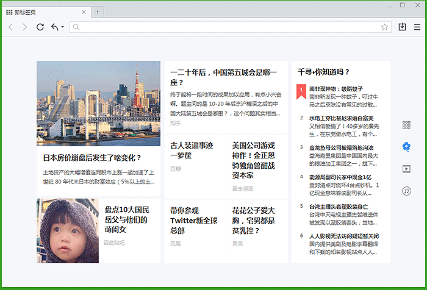

千寻千问
Q：为什么要使用千寻浏览器？
A:当然，千寻浏览器是一款气质优雅，功能强大的浏览器。千寻率先将扁平化式极简滑设计带入浏览器领域；首创网页云修复（可强力修复其他浏览器打不开的网页）、懒人标签、云加速下载、医疗医药安全等给力功能；打开浏览器就能看到款热小编7*24小时为你送上最搞笑、最热门、最有趣的内容。所有的努力都力求为大家打造一款聪明，有趣，好用的浏览器。

Q：千寻的设计师怎么描述千寻和千寻的logo？
A:寻，追寻，探索，又是古代单位，八尺为一寻。千寻，形容极高或极远，亦指勇于探索，不断发现的精神。每一次浏览体验，都是一次精彩的旅行，刺激、新奇、有趣，乘热气球飞行师探险家、旅游爱好者向往的旅行方式，随着高度的上升，视野不断扩大，与千寻的寻找发现、高度寓意相契合。热气球带我们发现世界，千寻给我们一个有趣的开始。
Q：千寻小编是美女么？运营什么了什么内容？
A:那还用说。小编每日9点为大家准时更新优质内容，集结搞笑段子、深度问答、热门大片儿、最酷歌单、新锐歌手，让你一饱眼福！
Q：什么是懒人标签？我该如何使用？
A:呐，懒人标签是让你高效办公的阻力神奇。当你打开超多标签页时，只要在关闭按钮处快速连击，即可关闭全部打开的网页，在这个过程中你的鼠标根本无需移动。当然，你也可以试试滑动鼠标滚轮，就能快速切换标签页。省去一堆网页逐次点击关闭的繁琐步骤，让你的办公效率火箭提升！
Q：隐身窗口模式真的能隐身么？
A:当然不是把你变没。在你访问私密网站是，千寻就像个小秘书，贴心提醒你提醒进入隐身窗口模式，防止记录等相关功能记录你的私密信息，小秘密再也不怕被老婆发现了！

Q：千寻云加速下载能有多快？
A:千寻首创云加速下载技术，下载PDF、EXE等文件全网最快。秒速下载百度资源，怎么用你懂的~~
Q：千寻真的能鉴定医疗安全么？
A:千寻联合百度杀毒与安全联盟大数据资源，提供医疗机构安全认证铭牌，为用户就医询医提供客观参考。

Q：网页云修复真的能修复网页么？我能试试么
A:请尝试用千寻浏览器打开如下链接http://www.yuhang.gov.cn/class/class_807/articles/335460.html，立见分晓，效果如下：

Q：我尝试设置千寻为默认浏览器，失败了怎么办？
A:请检查你的电脑是否安装过360安全卫士、金山卫士、QQ电脑管家、百度卫士、猎豹浏览器等默认浏览器功能的软件。详情请见http://bbs.qxllq.com/forum.php?mod=viewthread&tid=38
Q：什么是DNT(防追踪)功能？
A:DNT(Do Not Track)汉译即为防追踪。在你浏览网页时，网站和供应商正在默默收集你的点击行为、购买记录、搜索请求等行为，使用Do Not Track可有效保护你的隐私，减少广告干扰。